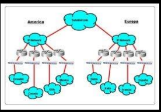
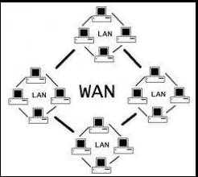

Nombres de Dominio de la Internet
- Si vas a registrar un nombre de dominio para una organización sin fines de lucro, un dominio .org puede ser la mejor opción.
- Si estás creando un sitio web relacionado con la tecnología, un dominio .io puede ser una buena opción.
- Si quieres registrar un nombre de dominio para una pequeña empresa, un dominio .co puede ser una buena opción para un nombre de
dominio corto y fácil de recordar
En general, es importante elegir un nombre de dominio que refleje la marca y la actividad
de su empresa o sitio web. Asegúrate de investigar las diferentes opciones de extensiones de
dominio disponibles y elegir la que mejor se adapte a tus necesidades. También es importante dar
con un registrador de dominios confiable y establecer un plan de renovación para mantener el nombre
de dominio actualizado y en línea.
En resumen, los dominios más utilizados del mundo en este momento son .com, .org, .net, .info, .biz. site, .ai y .co.
Cada uno de estos dominios tiene sus propias características y beneficios únicos, y la elección del dominio adecuado
dependerá de tu marca y actividad en línea. Al elegir un nombre de dominio, es importante investigar todas las opciones
disponibles y elegir la que mejor se adapte a tus necesidades y objetivos. Existen muchos proveedores de servicios de
alojamiento web y registro de dominios disponibles en el mercado, cada uno con sus propias características y beneficios
únicos. En particular, Neolo es una opción confiable y asequible que ofrece una amplia variedad de opciones de registro de
dominios y servicios de alojamiento web para satisfacer las necesidades de una amplia gama de clientes.
Existen muchas formas de clasificar las redes. Algunas pueden ser:
- Por su ámbito geográfico o alcance
- Por su tipo de conexión
- Por relación funcional
- Por tecnología
- Por topología física
- Por la direccionalidad de los datos
- Por su grado de autenticación
- Por grado de difusión
- Por servicio o función
Clasificación de Redes por su área Geográfica
- LAN
LAN son las siglas de Local Área Network, Red de área local. Una LAN es una red que
conecta los ordenadores en un área relativamente pequeña y predeterminada (como una habitación, un edificio,
o un conjunto de edificios). Las redes LAN se pueden conectar entre ellas a través de líneas telefónicas y
ondas de radio.

- MAN
Una MAN (Red de área metropolitana) conecta diversas LAN cercanas geográficamente (en un área de alrededor
de cincuenta kilómetros) entre sí a alta velocidad. Por lo tanto, una MAN permite que dos nodos
remotos se comuniquen como si fueran parte de la misma red de área local.
Una MAN está compuesta por conmutadores o routers conectados entre sí con conexiones de alta velocidad
(generalmente cables de fibra óptica).

- WAN
Red WAN: Wide Área Network (Red de Área Amplia). Es un grupo de computadoras conectadas
en red a largas distancias (100 Km. hasta 1000 Km.) dando el servidor a un país o continente.
Su información está constantemente fluyendo de distintos lugares, usados por distintos usuarios de
cualquier parte del mundo. Transmiten información de un lugar a otro, por esto tiene carácter público.

Comunicaciones